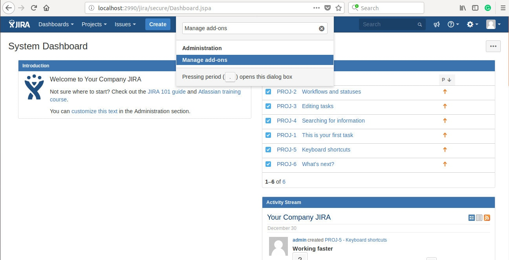
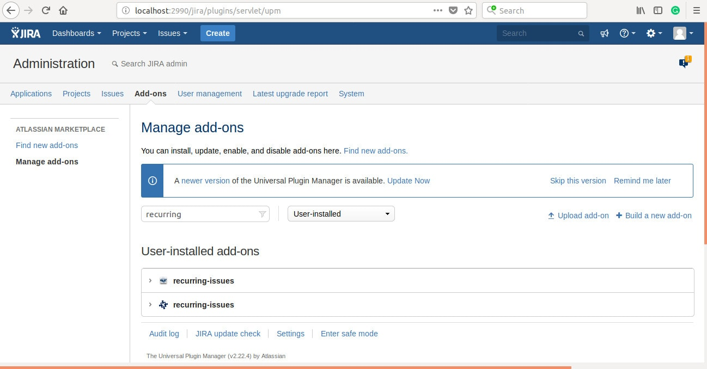

Official Atlassian’s tutorial is excellent. But, it doesn't cover all the aspects of Jira plugin development. Also describes them in isolation. There’s no single tutorial, which explains how to write a Jira plugin from the beginning to the end. This one will teach you how to write a complete Jira plugin. How to test it and how to deploy plugin to the marketplace. We're going to solve a real problem - recurring issues , not a hello world example.
Requirements
There are no many requirements you need to meet to write a Jira plugin. First of all, you need to know Java. It's possible to write a plugin in any JVM language (I've seen plugins written in Scala, Groovy, and Kotlin). But, I'm going to cover only Java here.
It would also be nice if you know other technologies from the JIRA stack. Like Maven, Spring, Javascript, velocity and soy templates. If you're not familiar with those, don't worry. You can learn through the tutorial.
Development environment
You can use any development IDE and any operating system. I'm going to use IntelliJ Idea Community Edition and Ubuntu. If you use another set-up, you'll have to adjust some steps.
Our plugin is going to support Jira 7.1+. Older Jira versions already reached the end of life
Install Oracle JDK 1.8
Jira 7.x supports only Oracle JDK 1.8 . Installation of the JDK varies from one operating system to other. Either you can download the installer or use some package manager. You also can install it from the archive. I used the instruction - How to install java with apt-get on Ubuntu-16-04 .
Atlassian SDK
You can find instructions for the installation process in the official guide. See tutorials for Linux, Mac or Windows
Create a plugin skeleton
Atlassian SDK is a handy tool, which can help to bootstrap the project. Type below command to the terminal. The command will generate maven project form the archetype . You need to wait for a while. Maven is downloading the dependencies. Later, you need to answer some questions. Maven users should recognize the fields ( groupId, artifactId, version and java package ). You can use the same values as me or chose your own.
Run the plugin
That's it. We created a plugin. Now we can compile and run it with Jira. Atlassian SDK will set-up the application instance with the plugin installed.
If you're running the plugin for the first time, it'll take some time. Again we have to download some maven dependencies and Jira installer. Next time it'll be faster. Logs like below indicate Jira instance is ready.
You can access it by opening http://localhost:2990/jira in a browser. Now you can log in (use admin as both login and password). Go through the wizard and set-up a Jira project. Then you can type GG.

You should see an input field like the one shown above. Now type manage add-ons. You can find the plugin we created on the list. It's installed and running.

In the next post, we're going to integrate Jira plugin with IntelliJ IDEA.